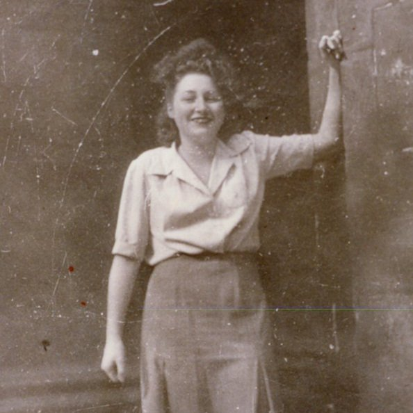

Portrait d’archive
Jeanine Sontag [alias Marie-Louise Beroujon] (F)
Jeanine SONTAG
Jeanine SONTAG est née le 17/07/1926 à Paris en France.
Il est fusillé à Lyon le 01/06/1944. Il avait 18 ans.
Dernière adresse connue : 24, rue Cuvier 69006 (Lyon)
École fréquentée :
Nom : SONTAG
Prénom(s) : Jeanine, Jeannine, Jetty
Date naissance : 14/06/1925
Âge (ans) : 19
Lieu naissance : Zürich
Pays ou département : Suisse
Lieu rassemblement : Lyon
Dernière adresse : 24, rue Cuvier
Ville : Lyon
Code postal : 69006
“N° Convoi : 86 ou 91”
Date d’exécution : 20/08/1944
Informations diverses : Fille de Juifs polonais, son père Usher Sontag, industriel, était né à Grabow et sa mère Lola Léonie Spiegel, à Varsovie. Son père, naturalisé français, dirigeait à Strasbourg une fabrique de vêtements. Élève au lycée de jeunes filles de Strasbourg de 1929 à 1939 (aujourd’hui lycée des Pontonniers), son professeur d’histoire fut la débutante Lucie Aubrac arrivée en 1938. Réfugiée à Lyon avec ses parents en 1940 ou 1941, la famille s’installa 24 rue Cuvier 69006. Malgré sa passion pour la littérature, Jetty Sontag appelée Jeannine, abandonna ses études secondaires et suivit une formation de secrétaire. Entrée contre le gré de ses parents au mouvement de résistance "Combat" en 1943, elle y devint pendant quelques mois agent de liaison à plein temps. En mars ou avril 1944, elle voulut passer à l’action armée et entra dans une organisation contrôlée par les communistes, le détachement FTP-MOI (Francs Tireurs et Partisans. Main d’œuvre immigrée) “Carmagnole” sous le pseudonyme de « Jeannette ». Blessée au pied alors qu’elle participait à la destruction de véhicules de la Wehrmacht dans un garage lyonnais, elle fut la seule membre du groupe à tomber aux mains des GMR (“Groupes mobiles de réserve” de la police de Vichy) et des Allemands le 3 juillet 1944. La jeune fille, sous sa fausse identité de Marie-Louise Beroujon, fut interrogée par la Gestapo, mais ne dévoila ni son identité réelle, ni aucune des nombreuses informations qu’elle détenait sur la Résistance. Extraite de la prison du Fort Montluc à Lyon, elle fut massacrée au lieu-dit Fort de Côte-Lorette dans un fort désaffecté situé sur la commune de Saint-Genis-Laval, le 20 août, en même temps que 120 autres personnes. Son corps, brûlé, fut identifié grâce à quelques parcelles de vêtements (Source: Le Maitron; Permezel B., Résistants à Lyon, Villeurbanne et aux alentours : 2824 engagements, BGA Permezel, 2003).
Son nom est inscrit sur le Caveau des martyrs à Saint-Genis-Laval. Une plaque mémorielle sera apposée sur la façade de son domicile lyonnais à l'initiative de l'Union des jeunes filles de France (liée à la Fédération des jeunesses communistes de France) et inaugurée le 18 mai 1947. Une salle d’études du lycée international des Pontonniers à Strasbourg lui a été dédiée. Son cousin, Guy Sontag établira une fiche de témoignage à Yad Vashem en 1990.Fusillée au fort de Côte-Lorette, à Saint-Genis-Laval.